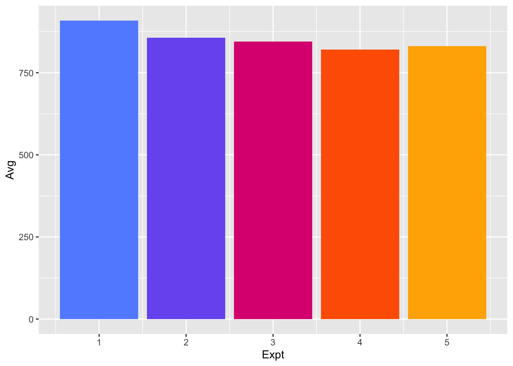
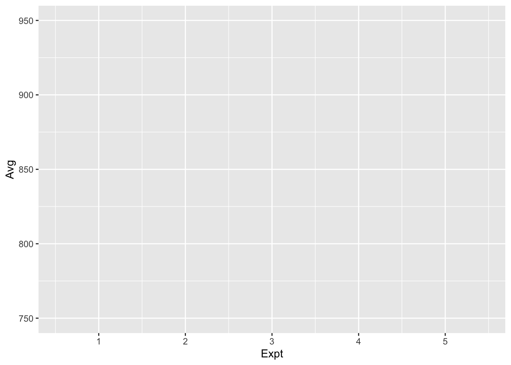
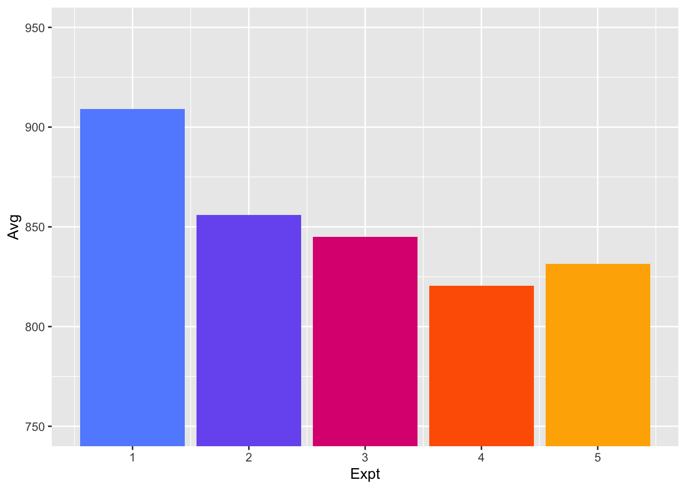
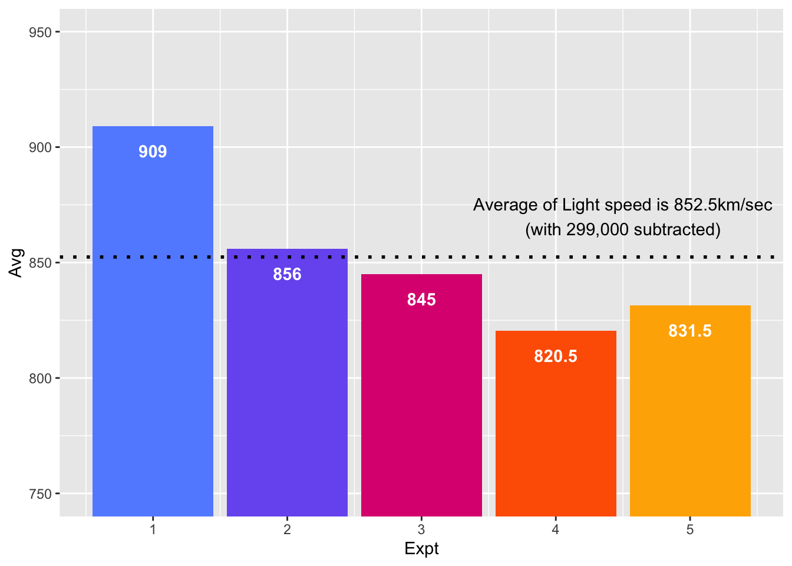
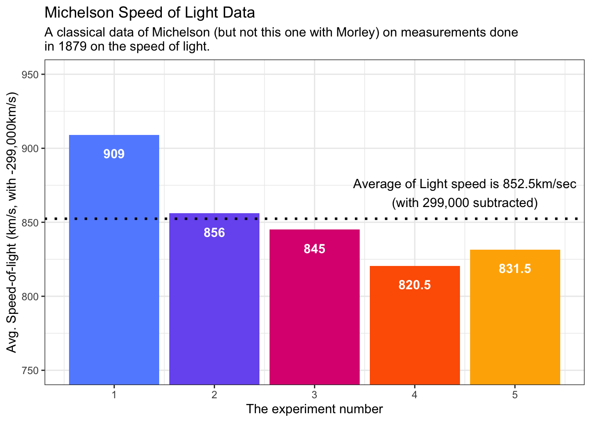

graphics.off()
rm(list = ls())
gc() used (Mb) gc trigger (Mb) limit (Mb) max used (Mb)
Ncells 578445 30.9 1317998 70.4 NA 669402 35.8
Vcells 1058348 8.1 8388608 64.0 16384 1851791 14.2Sean Ahn
August 26, 2023
In this post we will plot a bar histogram using data from the Michelson experiment and discuss what colors should be used for colorblind people when plotting a bar histogram. The plots we will create will be visible to colorblind people, so it is important that we visualize them using colors that are easily recognizable by everyone.
I usually use the following code for initialization. If you don’t want to remove plots and/or variables, you can skip it.
used (Mb) gc trigger (Mb) limit (Mb) max used (Mb)
Ncells 578445 30.9 1317998 70.4 NA 669402 35.8
Vcells 1058348 8.1 8388608 64.0 16384 1851791 14.2We want to use as few packages (some might call them “libraries”) as possible. If possible, I’m going to use only the tidyverse package. Tidyverse is one of the most famous packages in R programming, and it’s really powerful and useful.
sclales is a popular package in R that helps you convert values easily. It is also compatible with ggplot, which is a great help for visualization.
── Attaching core tidyverse packages ──────────────────────── tidyverse 2.0.0 ──
✔ dplyr 1.1.2 ✔ readr 2.1.4
✔ forcats 1.0.0 ✔ stringr 1.5.0
✔ ggplot2 3.4.2 ✔ tibble 3.2.1
✔ lubridate 1.9.2 ✔ tidyr 1.3.0
✔ purrr 1.0.1
── Conflicts ────────────────────────────────────────── tidyverse_conflicts() ──
✖ dplyr::filter() masks stats::filter()
✖ dplyr::lag() masks stats::lag()
ℹ Use the conflicted package (<http://conflicted.r-lib.org/>) to force all conflicts to become errors
Attaching package: 'scales'
The following object is masked from 'package:purrr':
discard
The following object is masked from 'package:readr':
col_factorWhen I write posts in my blog, I use the built-in dataset because I don’t want the reader to suffer by having to find the data from somewhere else.
The dataset I’ll be using in this post is shown below ⬇️ .
Michelson Speed of Light Data
A classical data of Michelson (but not this one with Morley) on measurements done in 1879 on the speed of light. The data consists of five experiments, each consisting of 20 consecutive ‘runs’. The response is the speed of light measurement, suitably coded (km/sec, with 299000 subtracted).
morley
A data frame with 100 observations on the following 3 variables.
Expt The experiment number, from 1 to 5.
Run The run number within each experiment.
Speed Speed-of-light measurement.
The data is here viewed as a randomized block experiment with ‘experiment’ and ‘run’ as the factors. ‘run’ may also be considered a quantitative variate to account for linear (or polynomial) changes in the measurement over the course of a single experiment.
all right! ready to go?
I took a look dataset with head() function. actually I used %>% pipe operator before, but now I use |> pipe operator.
Maybe stackoverflow article will be helpful to understand both pipe operator.
Expt Run Speed
001 1 1 850
002 1 2 740
003 1 3 900
004 1 4 1070
005 1 5 930
006 1 6 850I wanna find out morley attribute. as you can see, morley dataset is data frame object.
so I don’t need to change attribute.
and using dim() function, I checked how big morley dataset is.
morley is tiny dataset having only 100 rows with 3 column 😁.
First, group the morley dataset by experiment (Expt) using group_by() and then use the summarise() function to average the speed of light measured in each experiment.
It then stores the result in the df1 variable.
You have created a simple bar plot as shown below.
I can’t see any difference between the five experimental results, all of which are above 750 and around 850.
Since I can’t clearly see the difference in the plot, I need to adjust the scale of the y-axis so that I can see the difference between the experimental values.
Moreover, I can’t distinguish which bar stand for which experiment because all bar is gray color.
Here you are.
I colored each bar according to the experiment number. One thing to note is that the experiment number is recognized as an integer in the dataset, so if you want to color each one differently, you need to use the as.factor() function to make sure it is recognized as a factor and not an integer.
A number of color palettes have been developed with the intention of being accessible to people who are colorblind. Three of them appear below, from the IBM Design Library, Bang Wong, and Paul Tol respectively. Click on any of them to load it into the color palette selection tool above.
IBM Color Blind Safe Palette
“#648fff”, “#785ef0”, “#dc267f”, “#fe6100”, “#ffb000”, “#000000”, “#ffffff”
In my case, I made variable then store color for colorblind.
It’s a very good practice to have these colors predefined for people with color blindness when creating visualizations.
I highly recommend it. Alternatively, okabe-ito can achieve the same effect and is easy to use by installing the package.
When you want to use okabe-ito palette in ggplot, you can use ggokabeito.
df1 |>
ggplot(aes(Expt, Avg, fill=as.factor(Expt))) +
geom_col(show.legend = FALSE) +
scale_fill_manual(values = IBMColor)
Now, I try to zoom the plot to distinguish differences among the experiments.
for zooming, I set limits and breaks in sclae_y_continuous().
However, I can’t see anything 😮.
df1 |>
ggplot(aes(Expt, Avg, fill=as.factor(Expt))) +
geom_col(show.legend = FALSE) +
scale_fill_manual(values = IBMColor) +
scale_y_continuous(limits = c(750, 950), breaks = seq(750, 950, 50))Warning: Removed 5 rows containing missing values (`geom_col()`).
that because, I didn’t set proper coordinate system.
when I zoom in or zoom out the plot, I should be careful coordinate system.
if I set wrong coordinate system, data would clip (remove unseen data points).
If the purpose is to zoom, use the limit argument in the coordinate system (see coord_cartesian()).
df1 |>
ggplot(aes(Expt, Avg, fill=as.factor(Expt))) +
geom_col(show.legend = FALSE) +
scale_fill_manual(values = IBMColor) +
scale_y_continuous(breaks = seq(750, 950, 50)) +
coord_cartesian(ylim = c(750,950))
df1 |>
ggplot(aes(Expt, Avg, fill=as.factor(Expt))) +
geom_col(show.legend = FALSE) +
geom_hline(yintercept = mean(df1$Avg), lty = 3, linewidth = 1, color = "#000000") + # native R pipe operator NOT support '.Avg'
scale_fill_manual(values = IBMColor) +
scale_y_continuous(breaks = seq(750, 950, 50)) +
coord_cartesian(ylim = c(750,950))df1 |>
ggplot(aes(Expt, Avg, fill=as.factor(Expt), label = Avg)) +
geom_col(show.legend = FALSE) +
geom_hline(yintercept = mean(df1$Avg), lty = 3, linewidth = 1, color = "#000000") + # native R pipe operator NOT support '.Avg'
geom_text(vjust = 2.5, fontface = "bold", color = "white") +
annotate("text", x = 4.5, y = 870, label = paste0("Average of Light speed is 852.5km/sec","\n","(with 299,000 subtracted)")) +
scale_fill_manual(values = IBMColor) +
scale_y_continuous(breaks = seq(750, 950, 50)) +
coord_cartesian(ylim = c(750,950))
df1 |>
ggplot(aes(Expt, Avg, fill=as.factor(Expt), label = Avg)) +
geom_col(show.legend = FALSE) +
geom_hline(yintercept = mean(df1$Avg), lty = 3, linewidth = 1, color = "#000000") + # native R pipe operator NOT support '.Avg'
geom_text(vjust = 2.5, fontface = "bold", color = "white") +
annotate("text", x = 4.5, y = 870, label = paste0("Average of Light speed is 852.5km/sec","\n","(with 299,000 subtracted)")) +
scale_fill_manual(values = IBMColor) +
scale_y_continuous(breaks = seq(750, 950, 50)) +
coord_cartesian(ylim = c(750,950)) +
labs(x = "The experiment number", y = "Avg. Speed-of-light (km/s, with -299,000km/s)",
title = "Michelson Speed of Light Data",
subtitle = paste0("A classical data of Michelson (but not this one with Morley) on measurements done","\n","in 1879 on the speed of light.")) +
theme_bw()
END OF POST